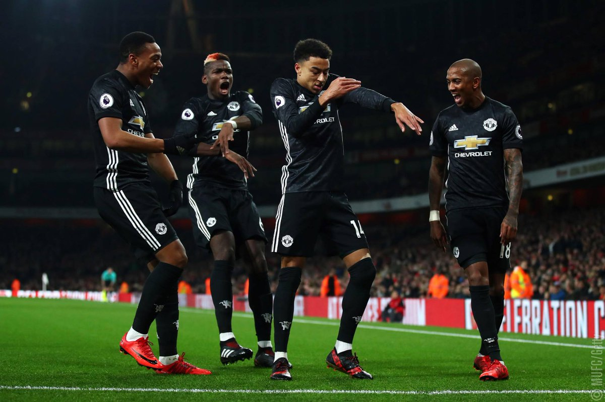

Manchester United was first founded in 1878 as Newton Heath LYR Football Club in Manchester, England. The club was created by workers from the Lancashire and Yorkshire Railway.
Some of Manchester United's biggest rivals are Liverpool, Manchester City, and Arsenal. The rivalry with Liverpool dates back to the late 1800s, Manchester City to their first meeting in 1881, and Arsenal became a major rivalry during the 1990s.
Manchester United became my favorite team because of Paul Pogba, who was the reason I started following the club. I also loved seeing so many Black players on the team like Jesse Lingard, Romelu Lukaku, and Anthony Martial.
Home